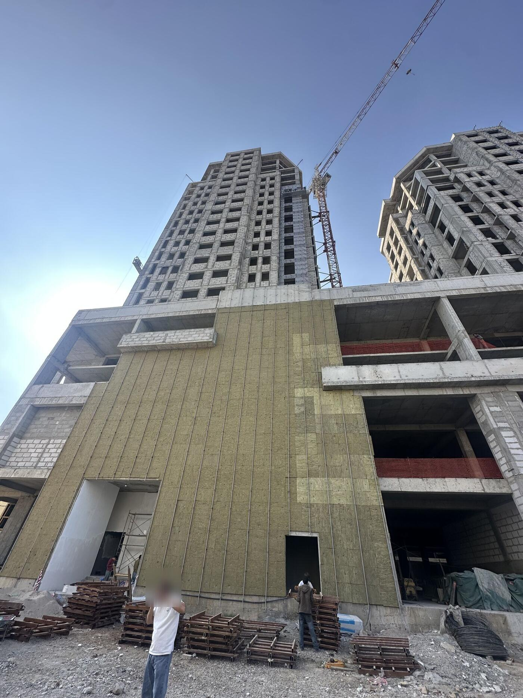

Для руководства ГК «Sebiston Group» · Душанбе, октябрь 2026 · конфиденциальноБарои роҳбарияти «Sebiston Group» · Душанбе, октябри соли 2026 · махфӣ
Достроим управление стройкой — этаж за этажомИдоракунии сохтмонро ошёна ба ошёна месозем
За 90 дней команда EUROSFERA ставит на ваших объектах снабжение, ПТО, контроль качества, охрану труда и учёт. С инструкциями на русском и таджикском, Telegram-ботом заявок и прямыми контрактами с фабриками Европы.Дар 90 рӯз дастаи EUROSFERA дар объектҳои шумо таъминот, ПТО (шуъбаи истеҳсолӣ-техникӣ), назорати сифат, ҳифзи меҳнат ва баҳисобгириро ба роҳ мемонад. Бо дастурамалҳо ба забонҳои русӣ ва тоҷикӣ, боти Telegram барои дархостҳо ва шартномаҳои мустақим бо фабрикаҳои Аврупо.
Вы выросли быстрее, чем процессыШумо аз равандҳои худ тезтар рушд кардед
С 2017 года — от первого дома № 84 до «Бульвара Скандинавия», где по плану десять жилых комплексов. По данным вашего сайта: 250 000 м², 12+ проектов, 8 500+ покупателей, три строительные компании и свой завод газоблоков.Аз соли 2017 — аз аввалин хонаи № 84 то «Бульвар Скандинавия», ки тибқи нақша аз даҳ маҷмааи истиқоматӣ иборат хоҳад буд. Аз рӯи маълумоти сайти шумо: 250 000 м², 12+ лоиҳа, 8 500+ харидор, се ширкати сохтмонӣ ва заводи газоблоки худ.
Такой рост всегда обгоняет управление: многое держится на опыте отдельных людей, а не на правилах. Так растёт каждая большая компания — и следующий шаг у всех один: система.Чунин рушд ҳамеша аз идоракунӣ пеш мегузарад: бисёр чиз ба таҷрибаи одамони алоҳида такя мекунад, на ба қоидаҳо. Ҳар ширкати калон ҳамин тавр рушд мекунад — ва қадами навбатӣ барои ҳама як аст: низом.
Ваш объект, 15 октября 2026Объекти шумо, 15 октябри соли 2026
Ваши проектыЛоиҳаҳои шумо
ПроектЛоиҳа
ГдеМакон
О проектеМаълумот
Бульвар Скандинавия
91–92 мкр, Душанбемикроноҳияи 91–92, Душанбе
по плану 10 жилых комплексов и 2 бизнес-центратибқи нақша 10 маҷмааи истиқоматӣ ва 2 маркази тиҷоратӣ
ADDRESS Residence
Шохмансур, Бофанда 10Шоҳмансур, Бофанда 10
строит «Рахш Сохтмон»«Рахш Сохтмон» месозад
Gissar Mall
г. Гиссарш. Ҳисор
этап фасада, сдача — III кв. 2027марҳилаи фасад, ба истифода супоридан — семоҳаи III соли 2027
Varzob Riviera
Варзобский район, 37 кмноҳияи Варзоб, 37 км
загородный проектлоиҳаи берун аз шаҳр
Central Mall
пр. Рудакихиёбони Рӯдакӣ
коммерческийтиҷоратӣ
Пулоди
Пулоди, 29/31Пулодӣ, 29/31
строит «Мавсим Сохтмон»«Мавсим Сохтмон» месозад
Ахрори
ул. Хабиба Ахрори, 101кӯчаи Ҳабиб Аҳрорӣ, 101
жилой комплексмаҷмааи истиқоматӣ
Славянский
ул. М. Турсунзаде, 36кӯчаи М. Турсунзода, 36
жилой комплексмаҷмааи истиқоматӣ
Ветерок
Сино, ЛучобСино, Лучоб
жилой комплексмаҷмааи истиқоматӣ
Сердце столицы
ул. Фотеха Ниёзи, 27кӯчаи Фотеҳ Ниёзӣ, 27
жилой комплексмаҷмааи истиқоматӣ
По данным sebiston.com и somon.tj на 16.10.2026. Строительные компании группы: «Аморат Иншоот», «Рахш Сохтмон», «Мавсим Сохтмон».Аз рӯи маълумоти sebiston.com ва somon.tj ба ҳолати 16.10.2026. Ширкатҳои сохтмонии гурӯҳ: «Аморат Иншоот», «Рахш Сохтмон», «Мавсим Сохтмон».
Обход 15 октября: задачи и наш ответБоздиди 15 октябр: масъалаҳо ва ҷавоби мо
Два объекта, несколько часов. Записали задачи, которые обсуждали на месте, — и к каждой наш ответ.Ду объект, чанд соат. Масъалаҳоеро, ки дар ҷой муҳокима кардем, навиштем — ва ба ҳар кадомаш ҷавоби мо.
Наблюдения — визуальный осмотр, а не техническое заключение. Материалы обхода — только для руководства группы.Мушоҳидаҳо — натиҷаи муоинаи визуалӣ, на хулосаи техникӣ. Маводи боздид — танҳо барои роҳбарияти гурӯҳ.
01
Подземная часть до −14 мҚисми зеризаминӣ то −14 м
Грунт, по словам генподрядчика, слабый, а защита — фольгоизол. Для такой глубины технология не подходит — вы и сами думаете её менять.Хок, ба гуфтаи пудратчии генералӣ, суст аст, вале муҳофиза — фолгоизол. Барои чунин чуқурӣ ин технология мувофиқ нест — шумо худ низ иваз кардани онро баррасӣ мекунед.
ПредлагаемПешниҳодгидроизоляция под слабый грунт и глубину 14 м — с расчётом и технологической картой.гидроизолятсия барои хоки суст ва чуқурии 14 м — бо ҳисоб ва харитаи технологӣ.
этаж 6 · ПТОошёнаи 6 · ПТО
02
Обмазка участкамиҚабати битум ҷо-ҷо
Битум нанесён участками. До засыпки слой должен стать сплошным — иначе вода найдёт шов.Битум ҷо-ҷо молида шудааст. То пур кардани хок қабат бояд яклухт шавад — вагарна об дарзро меёбад.
ПредлагаемПешниҳодприёмка слоя по чек-листу до засыпки, с фото в отчёт.қабули қабат бо рӯйхати санҷишӣ то пур кардани хок, бо акс дар ҳисобот.
этаж 7 · Качествоошёнаи 7 · Сифат
03
Кровля-парк: нужно проектное решениеБоғ дар бом: қарори лоиҳавӣ лозим аст
Здесь будет парк. Деформационный шов пока закрывают временной резиновой лентой — проектного решения нет, это обсудили на месте.Дар ин ҷо боғ мешавад. Дарзи деформатсиониро ҳоло бо тасмаи резинии муваққатӣ мепӯшанд — қарори лоиҳавӣ нест, инро дар ҷой муҳокима кардем.
ПредлагаемПешниҳодрешение по шву и гидроизоляции эксплуатируемой кровли — покажем на встрече.қарор оид ба дарз ва гидроизолятсияи боми истифодашаванда — дар вохӯрӣ нишон медиҳем.
этаж 6 · ПТОошёнаи 6 · ПТО
04
Стяжка на кровле крошитсяСтяжкаи бом мерезад
Раковины и выбоины, под ногой хрустит и слоится. На такое основание гидроизоляция не ляжет.Чуқуриҳо ва кандагиҳо, зери пой ғарч-ғарч мекунад ва қабат-қабат мешавад. Гидроизолятсия ба чунин асос намечаспад.
ПредлагаемПешниҳодснять слабый слой и подготовить основание, потом гидроизоляция. Цель — 20 лет не возвращаться к этому узлу.қабати сустро гирифта, асосро тайёр кардан, баъд гидроизолятсия. Мақсад — 20 сол ба ин ҷо барнагаштан.
этаж 7 · Качествоошёнаи 7 · Сифат
05
Трещины в стяжкеТарқишҳо дар стяжка
Если не подготовить основание, через 2–4 года покрытие может вздуться и лопнуть, каким бы дорогим ни был материал.Агар асос тайёр карда нашавад, пас аз 2–4 сол рӯйпӯш метавонад варам карда, кафад — мавод ҳар қадар гарон бошад ҳам.
ПредлагаемПешниҳодтехнологическая карта кровли и приёмка основания перед каждым слоем.харитаи технологии бом ва қабули асос пеш аз ҳар қабат.
этаж 7 · Качествоошёнаи 7 · Сифат
06
Проём шахты без крышкиДаҳонаи шахта бе сарпӯш
На кровле открытая шахта, по краю только низкий бортик.Дар бом шахтаи кушода, дар канораш танҳо девораки паст.
ПредлагаемПешниҳодзакрыть и оградить в первый день; ежедневный обход по охране труда.дар рӯзи аввал пӯшонидан ва иҳота кардан; боздиди ҳаррӯза оид ба ҳифзи меҳнат.
этаж 3 · Охрана трудаошёнаи 3 · Ҳифзи меҳнат
07
Материал вперемешку с мусоромМавод омехта бо партов
Трубы лесов, арматура, опалубка лежат на площадке — склада не видно.Қубурҳои ҳавозаи сохтмонӣ, арматура, қолипҳо дар майдон хобидаанд — анбор намоён нест.
ПредлагаемПешниҳодзоны складирования, приёмка по накладной, сверка остатков раз в неделю.минтақаҳои нигоҳдорӣ, қабул бо борхат, санҷиши бақия ҳафтае як бор.
этаж 4 · Склад и учётошёнаи 4 · Анбор ва баҳисобгирӣ

08
У входа — без касокДар назди даромад — бе каска
У входа поддоны и мусор, рядом люди без касок. Плиты утеплителя на фасаде разного оттенка.Дар назди даромад поддонҳо ва партов, дар паҳлӯ одамони бе каска. Плитаҳои гарминигоҳдорандаи фасад тобишҳои гуногун доранд.
ПредлагаемПешниҳоддопуск на площадку только в каске; приёмка фасада по образцу.вуруд ба майдон танҳо бо каска; қабули фасад аз рӯи намуна.
этажи 3 и 7ошёнаҳои 3 ва 7
«Какой бы дорогой материал вы ни постелили — через два-три года это потечёт. Сначала нормальная техническая подготовка, потом гидроизоляция. Решение предложим такое, чтобы через 20 лет вы сюда не возвращались».«Ҳар маводи гароне, ки гузоред ҳам — пас аз ду-се сол об мечакад. Аввал тайёрии техникии дуруст, баъд гидроизолятсия. Роҳи ҳалле пешниҳод мекунем, ки 20 сол ба ин ҷо барнагардед».
Пока вы ищете инженера ПТО, логиста и сметчика (вакансии на sebiston.com на 16.10.2026), эти участки ведём мы — новые люди придут на готовые инструкции.То даме, ки шумо муҳандиси ПТО, логист ва сметачӣ меҷӯед (эълонҳо дар sebiston.com ба ҳолати 16.10.2026), ин самтҳоро мо пеш мебарем — одамони нав ба дастурамалҳои тайёр меоянд.
Восемь этажей, которые достроим вместеҲашт ошёнае, ки якҷоя месозем
Каждый этаж — отдел с ответственным, правилами и отчётом. Что-то у вас уже есть, что-то предстоит создать. За 90 дней ставим все восемь.Ҳар ошёна як шуъба аст: масъул, қоидаҳо ва ҳисобот. Баъзеаш аллакай ҳаст, баъзеашро бояд сохт. Дар 90 рӯз ҳар ҳаштро ба роҳ мемонем.
1Охрана объектаПосбонии объект
2ТабельТабели вақти корӣ
3Охрана трудаҲифзи меҳнат
4Склад и учётАнбор ва баҳисобгирӣ
5СнабжениеТаъминот
6ПТО и проектные решенияПТО ва қарорҳои лоиҳавӣ
7Контроль качестваНазорати сифат
8Отчёт руководствуҲисобот ба роҳбарият
Ставим этажи по одномуОшёнаҳоро як-як мегузорем
Листайте — кран поставит все восемь. На каждом этаже: что сейчас, что ставим и кому отчёт.Варақ занед — кран ҳамаи ҳаштро мегузорад. Дар ҳар ошёна: ҳоло чӣ ҳаст, мо чиро ба роҳ мемонем ва ҳисобот ба кӣ.
Этаж 1 из 8Ошёнаи 1 аз 8
Охрана объектаПосбонии объект
Что видимМушоҳидаЖурнала въезда и учёта вывоза на обходе не увидели.Дар боздид дафтари вуруд ва баҳисобгирии баровардани маводро надидем.
Пропуска и журнал въездаГузарномаҳо ва дафтари вуруд
Вывоз — только по накладной с подписьюБаровардан — танҳо бо борхати имзошуда
Ночной обход с отметкой в ботеГашти шабона бо қайд дар бот
Отчёт: каждый день — начальнику участкаҲисобот: ҳар рӯз — ба сардори қитъа
Этаж 2 из 8Ошёнаи 2 аз 8
ТабельТабели вақти корӣ
Что видимМушоҳидаТабеля на объекте на обходе не увидели.Ҳангоми боздид дар объект табел надидем.
Отметка прихода и ухода в боте — с фото и геометкойҚайди омадан ва рафтан дар бот — бо акс ва геоқайд
Табель по объектам и бригадамТабел аз рӯи объектҳо ва бригадаҳо
Оплата — только по табелюМузд — танҳо аз рӯи табел
Отчёт: каждый день — прорабу, раз в неделю — бухгалтерииҲисобот: ҳар рӯз — ба прораб, ҳафтае як бор — ба муҳосибот
Этаж 3 из 8Ошёнаи 3 аз 8
Охрана трудаҲифзи меҳнат
Что видимМушоҳидаОткрытая шахта на кровле, у входа люди без касок.Шахтаи кушода дар бом, дар назди даромад одамони бе каска.
Инструктаж при допуске — на таджикском и русскомДастурдиҳӣ ҳангоми ба кор иҷозат додан — бо забонҳои тоҷикӣ ва русӣ
Проверка касок и страховки каждое утроСанҷиши каска ва камарбанди бехатарӣ ҳар субҳ
Ограждение проёмов, остановка работ при опасностиИҳотаи даҳонаҳо, қатъи кор ҳангоми хатар
Отчёт: каждый день — техническому руководителюҲисобот: ҳар рӯз — ба роҳбари техникӣ
Этаж 4 из 8Ошёнаи 4 аз 8
Склад и учётАнбор ва баҳисобгирӣ
Что видимМушоҳидаМатериал на площадке вперемешку с мусором, склада не видно.Мавод дар майдон омехта бо партов хобидааст, анбор намоён нест.
Приёмка по накладной и фотоҚабул бо борхат ва акс
Расход — по нормам ПТОСарфи мавод — аз рӯи меъёрҳои ПТО
Сверка остатков каждую неделюСанҷиши бақия ҳар ҳафта
Отчёт: раз в неделю — снабжению и финансамҲисобот: ҳафтае як бор — ба таъминот ва молия
Этаж 5 из 8Ошёнаи 5 аз 8
СнабжениеТаъминот
Что видимМушоҳидаЗаявки идут устно и в личных чатах — сравнить цены между объектами трудно.Дархостҳо шифоҳӣ ва дар чатҳои шахсӣ дода мешаванд — нархҳоро байни объектҳо муқоиса кардан душвор аст.
Все заявки — через одного ботаҲамаи дархостҳо — тавассути як бот
Три цены на каждую закупкуСе нарх барои ҳар харид
Заказывает один, принимает другойЯк кас фармоиш медиҳад, дигаре қабул мекунад
Отчёт: раз в неделю — руководству: что, у кого и почёмҲисобот: ҳафтае як бор — ба роҳбарият: чӣ, аз кӣ ва ба чанд
Этаж 6 из 8Ошёнаи 6 аз 8
ПТО и проектные решенияПТО ва қарорҳои лоиҳавӣ
Что видимМушоҳидаУзлы делают без проектного решения: шов — временной лентой, фундамент — фольгоизолом.Гиреҳҳо бе қарори лоиҳавӣ сохта мешаванд: дарз — бо тасмаи муваққатӣ, таҳкурсӣ — бо фолгоизол.
Решения по узлам: кровля, гидроизоляция, швыҚарорҳо оид ба гиреҳҳо: бом, гидроизолятсия, дарзҳо
Объёмы по проекту для каждой заявкиҲаҷмҳо аз рӯи лоиҳа барои ҳар дархост
Акты скрытых работ и исполнительная документацияСанадҳои корҳои пинҳоншаванда ва ҳуҷҷатҳои иҷроия
Отчёт: раз в неделю — техническому руководителюҲисобот: ҳафтае як бор — ба роҳбари техникӣ
Этаж 7 из 8Ошёнаи 7 аз 8
Контроль качестваНазорати сифат
Что видимМушоҳидаОснование не проверяют перед следующим слоем: на стяжку с раковинами готовятся класть гидроизоляцию.Асосро пеш аз қабати навбатӣ намесанҷанд: ба стяжкаи чуқуридор гидроизолятсия гузоштанӣ ҳастанд.
Входной контроль каждой поставкиНазорати вурудии ҳар таҳвил
Приёмка каждого слоя по чек-листу с фотоҚабули ҳар қабат бо рӯйхати санҷишӣ ва акс
Журнал брака и переделокДафтари нуқсонҳо ва ислоҳи онҳо
Отчёт: раз в неделю — техническому руководителюҲисобот: ҳафтае як бор — ба роҳбари техникӣ
Этаж 8 из 8Ошёнаи 8 аз 8
Отчёт руководствуҲисобот ба роҳбарият
ЦельМақсадРуководство узнаёт о проблеме до того, как работу придётся переделывать.Роҳбарият дар бораи мушкил пеш аз он мефаҳмад, ки корро аз нав иҷро кардан лозим ояд.
Одна сводка по всем объектам: деньги, сроки, качество, людиЯк ҳисоботи умумӣ аз рӯи ҳамаи объектҳо: пул, мӯҳлат, сифат, одамон
Красные флаги — сразу в TelegramАломатҳои хатар — фавран дар Telegram
Через 90 дней — заключение по компанииПас аз 90 рӯз — хулоса дар бораи ширкат
Отчёт: раз в неделю — генеральному директоруҲисобот: ҳафтае як бор — ба директори генералӣ
Одна дверь для всех заявокЯк дар барои ҳамаи дархостҳо
Прораб пишет, говорит голосом или фотографирует заявку в Telegram. Бот её понимает, проверяет и ведёт до приёмки на объекте.Прораб дархостро дар Telegram менависад, бо овоз мегӯяд ё аксашро мегирад. Бот онро мефаҳмад, месанҷад ва то қабул дар объект пеш мебарад.
Понимает текст, голосовые и фото накладнойМатн, паёмҳои овозӣ ва акси борхатро мефаҳмад
Сверяет с объёмами ПТО и сметойБо ҳаҷмҳои ПТО ва смета муқоиса мекунад
Сравнивает цены по загруженным прайс-листамНархҳоро аз рӯи нархномаҳои боршуда муқоиса мекунад
Отправляет на утверждение по лимитамВобаста ба ҳадди маблағ барои тасдиқ мефиристад
Пишет заявку поставщику или на фабрику по шаблонуБа таъминкунанда ё фабрика тибқи намуна дархост менависад
Закрывает заявку только после приёмки с фотоДархостро танҳо баъди қабул бо акс мебандад
Каждую заявку и цену руководство видит в любой момент — отклонения заметны сразу.Ҳар дархост ва нархро роҳбарият дар ҳар лаҳза мебинад — дуршавӣ аз меъёр фавран намоён аст.
Голосовые на таджикском и русском — точность распознавания проверяем на пилотном объекте.Паёмҳои овозӣ ба забонҳои тоҷикӣ ва русӣ — дақиқии шинохтро дар объекти озмоишӣ месанҷем.
Прораб · Объект АПрораб · Объекти А0:07«Цемент М500, 40 тонн, на объект А, к четвергу»«Семент М500, 40 тонна, ба объекти А, то панҷшанбе»
Заявка № 147 принята. Объект А · цемент М500 · 40 т · срок: чт, 22.10Дархости № 147 қабул шуд. Объекти А · семент М500 · 40 т · мӯҳлат: панҷшанбе, 22.10
Проверка ПТО: по графику на монолит 6-го этажа нужно 38 т. 40 т — в пределах нормы Санҷиши ПТО: тибқи ҷадвал барои монолити ошёнаи шашум 38 т лозим аст. 40 т — дар доираи меъёр
Цены из загруженных прайс-листов, сомони за тонну:Нархҳо аз нархномаҳои боршуда, сомонӣ барои як тонна:Поставщик АТаъминкунанда А1 150Поставщик БТаъминкунанда Б1 090Поставщик ВТаъминкунанда В1 210Предлагаю Б: на 2 400 сомони дешевле А за всю партию.Б-ро пешниҳод мекунам: барои тамоми партия аз А 2 400 сомонӣ арзонтар.
Отправлено на утверждение: руководитель снабжения.Барои тасдиқ фиристода шуд: роҳбари таъминот.
Руководитель снабженияРоҳбари таъминотУтверждаю.Тасдиқ мекунам.
Заказ ушёл поставщику Б по шаблону. Доставка — ср, 21.10. Приёмку подтвердит кладовщик: фото, накладная, количество.Фармоиш тибқи намуна ба таъминкунандаи Б фиристода шуд. Расонидан — чоршанбе, 21.10. Қабулро анбордор тасдиқ мекунад: акс, борхат, миқдор.
Демонстрация. Цены и объёмы условныеНамоиш. Нархҳо ва ҳаҷмҳо шартӣ
Каждый знает, что делать — на своём языкеҲар кас медонад, ки чӣ кор кунад — бо забони худ
Для каждой должности — инструкция, для каждого отдела — регламент. На русском и таджикском. Коротко, по шагам, с ответственностью.Барои ҳар вазифа — дастурамал, барои ҳар шуъба — низомнома. Ба забонҳои русӣ ва тоҷикӣ. Мухтасар, қадам ба қадам, бо масъулони муайян.
Должностные инструкции — для каждой должности на объекте и в офисеДастурамалҳои вазифавӣ — барои ҳар вазифа дар объект ва офис
Принимаю материал только по заявке из бота с номером.
Сверяю количество, марку и сертификат с накладной.
Фотографирую груз и накладную, отправляю в бот в течение часа.
При расхождении не подписываю и сразу сообщаю в снабжение.
Отвечаю за остатки на складе. Отчёт — каждую пятницу.
Анбордори объект. Қабули мавод
Маводро танҳо бо дархости рақамдор аз бот қабул мекунам.
Миқдор, марка ва сертификатро бо борхат муқоиса мекунам.
Аз бор ва борхат акс гирифта, дар давоми як соат ба бот мефиристам.
Ҳангоми номувофиқӣ имзо намекунам ва фавран ба таъминот хабар медиҳам.
Барои бақияи анбор ҷавобгарам. Ҳисобот — ҳар ҷумъа.
Подпись · ИмзоДата · СанаОзнакомлен · Шинос шудам
Цена фабрики — без цепочки перекупщиковНархи фабрика — бе занҷири миёнаравҳо
EUROSFERA — компания из Евросоюза, Болгария. Делаем срез: что вы покупаете, у кого и почём. Где закупка у фабрики выгоднее, EUROSFERA заключает контракт с фабрикой и поставляет вам.EUROSFERA — ширкат аз Иттиҳоди Аврупо, Булғористон. Таҳлил мекунем: шумо чӣ мехаред, аз кӣ ва ба чанд. Дар ҷое, ки харид аз фабрика фоиданоктар аст, EUROSFERA бо фабрика шартнома мебандад ва ба шумо мол мерасонад.
Фабрика в ЕвропеФабрика дар Аврупоцена фабрики — в контрактенархи фабрика — дар шартнома
EUROSFERA, Болгария, Булғористонинвойс в евро от компании ЕС, экспортные документыинвойс ба евро аз ширкати ИА, ҳуҷҷатҳои содирот
Ваш объектОбъекти шумодоставка и приёмка с фоторасонидан ва қабул бо акс
Гидроизоляция и кровельные материалы, утеплитель, керамогранит и плитка, сантехника и инсталляции.Гидроизолятсия ва маводи бомпӯшӣ, гарминигоҳдоранда, керамогранит ва кошин, сантехника ва инсталлятсияҳо.
Цена фабрики и условия EUROSFERA — открыто в договоре: их видят снабжение и финансы.Нархи фабрика ва шартҳои EUROSFERA дар шартнома ошкоро навишта мешаванд — онҳоро таъминот ва молия мебинанд.
10 специалистов удалённо и 2–3 на ваших объектах10 мутахассиси фосилавӣ ва 2–3 нафар дар объектҳои шумо
Группа на объектах — каждый день: утренняя планёрка, обходы, все совещания. Удалённая команда разбирает документы, цены и поставщиков, пишет инструкции и настраивает бота.Гурӯҳ ҳар рӯз дар объектҳо: машварати субҳ, боздидҳо, ҳамаи ҷаласаҳо. Дастаи фосилавӣ ҳуҷҷатҳо, нархҳо ва таъминкунандагонро таҳлил мекунад, дастурамалҳо менависад ва ботро танзим мекунад.
Удалённые специалисты подключаются по задачам — в нужный день, а не на полную ставку.Мутахассисони фосилавӣ аз рӯи вазифаҳо ҷалб мешаванд — дар рӯзи лозимӣ, на бо ставкаи пурра.
Примерный день группы на объектеРӯзи намунавии гурӯҳ дар объект
08:00планёрка с прорабамимашварати субҳ бо прорабҳо
09:00обход и приёмка работбоздид ва қабули корҳо
13:00разбор заявок и поставокбаррасии дархостҳо ва таҳвилот
16:00совещания и решения по узламҷаласаҳо ва қарорҳо оид ба гиреҳҳо
18:00отчёт дня в ботеҳисоботи рӯзона дар бот
На объектах, каждый деньДар объектҳо, ҳар рӯз
Руководитель группы на объектахРоҳбари гурӯҳ дар объектҳо
Инженер технического контроляМуҳандиси назорати техникӣ
Специалист по охране трудаМутахассиси ҳифзи меҳнат
УдалённоФосилавӣ
Руководитель проектаРоҳбари лоиҳа
Инженер ПТОМуҳандиси ПТО
Инженер по качествуМуҳандиси сифат
Специалист по охране трудаМутахассиси ҳифзи меҳнат
Аналитик снабженияТаҳлилгари таъминот
СметчикСметачӣ
Логист по поставкам из ЕСЛогист оид ба таҳвилот аз ИА
Методист и переводчик RU/TJМетодист ва тарҷумони RU/TJ
Кто мыМо кистем
EUROSFERA — компания из Болгарии (ЕС): закупка в Европе, экспортные документы и логистика в Центральную Азию. Руководитель — Анатолий Тукан; обход 15 октября он вёл лично.EUROSFERA — ширкат аз Булғористон (ИА): харид дар Аврупо, ҳуҷҷатҳои содирот ва логистика ба Осиёи Марказӣ. Роҳбар — Анатолий Тукан; боздиди 15 октябрро худи ӯ гузаронид.
Состав уточняем после первой недели — под ваши объекты.Ҳайатро пас аз ҳафтаи аввал мувофиқи объектҳои шумо дақиқ мекунем.
Обход всех объектов, интервью с руководителями, карта процессов и денег, срез поставщиков и цен.Боздид аз ҳамаи объектҳо, суҳбат бо роҳбарон, харитаи равандҳо ва гардиши пул, таҳлили таъминкунандагон ва нархҳо.
К 30-му дню у руководства: карта процессов и денег, срез поставщиков, пропуска и табель на первом объекте.То рӯзи 30-юм дар дасти роҳбарият: харитаи равандҳо ва гардиши пул, таҳлили таъминкунандагон, гузарномаҳо ва табел дар объекти аввал.
Дни 31–60Рӯзҳои 31–60
СтавимҶорисозӣ
Регламенты и инструкции на двух языках, бот заявок на пилотном объекте, входной контроль, охрана труда.Низомномаҳо ва дастурамалҳо ба ду забон, боти дархостҳо дар объекти озмоишӣ, назорати вурудӣ, ҳифзи меҳнат.
К 60-му дню: инструкции RU/TJ у сотрудников, бот работает на пилотном объекте, первые прямые контракты.То рӯзи 60-ум: дастурамалҳои RU/TJ дар дасти кормандон, бот дар объекти озмоишӣ кор мекунад, аввалин шартномаҳои мустақим.
Дни 61–90Рӯзҳои 61–90
ЗакрепляемМустаҳкамкунӣ
Правила — на все объекты, обучение людей, проверка исполнения.Қоидаҳо — ба ҳамаи объектҳо, омӯзиши одамон, санҷиши иҷро.
К 90-му дню: правила на всех объектах, обученные люди, заключение по компании и план на год.То рӯзи 90-ум: қоидаҳо дар ҳамаи объектҳо, кормандони омӯзишдида, хулоса дар бораи ширкат ва нақша барои як сол.
Дальше — вместеМинбаъд — якҷоя
После 90 дней — на ваш выбор: наши специалисты помесячно, обучение ваших людей на объектах в Душанбе и совместные проекты на новых рынках.Пас аз 90 рӯз — бо интихоби шумо: мутахассисони мо моҳона, омӯзиши одамони шумо дар объектҳои Душанбе ва лоиҳаҳои муштарак дар бозорҳои нав.
90
Ставим системуНизомро ба роҳ мемонем
Восемь отделов на ваших объектах, инструкции, бот, контракты.Ҳашт шуъба дар объектҳои шумо, дастурамалҳо, бот, шартномаҳо.
Специалисты помесячноҶалби мутахассисон
Инженер ПТО, контроль качества, снабжение — пока ваши люди набирают опыт.Муҳандиси ПТО, назорати сифат, таъминот — моҳона, то вақте ки одамони шумо таҷриба меандӯзанд.
EU
Новые рынкиБозорҳои нав
Совместные проекты на рынке Евросоюза и на других рынках — в рамках законодательства ЕС и Таджикистана. Ваши люди — с опытом и нашими стандартами.Лоиҳаҳои муштарак дар бозори Иттиҳоди Аврупо ва дигар бозорҳо — дар доираи қонунгузории ИА ва Тоҷикистон. Одамони шумо — бо таҷрибаи нав ва стандартҳои мо.
Ҳунар чашмаи зоянда аст ва давлати поянда.
«Мастерство — родник, что не иссякает, и богатство, что не проходит».
Цена и ценность — разные вещиНарх ва қадр — ду чизи гуногун
Цена — 30 000 € в месяц за целый отдел на ваших объектах. Ценность деньгами не измеряется: это мастерство, которое останется у ваших людей, и партнёрство, которое мы начинаем. Нам важнее не разовая оплата, а годы совместной работы.Нарх — 30 000 € дар як моҳ барои як шуъбаи пурра дар объектҳои шумо. Қадрро бо пул чен карда намешавад: ин маҳоратест, ки дар дасти одамони шумо мемонад, ва шарикиест, ки мо оғоз мекунем. Барои мо на пардохти якдафъаина, балки солҳои кори муштарак муҳимтар аст.
30 000 € в месяц30 000 € дар як моҳ
Целый отдел на ваших объектах: 10 специалистов удалённо и 2–3 на площадке каждый день. Первый этап — 3 месяца.Як шуъбаи пурра дар объектҳои шумо: 10 мутахассиси фосилавӣ ва 2–3 нафар ҳар рӯз дар майдон. Марҳилаи аввал — 3 моҳ.
15 000 € в месяцдар як моҳ
Технический контроль и отдел качестваНазорати техникӣ ва шуъбаи сифат
Отдел качества работает на всех ваших объектах все 90 дней: наш инженер на площадке и команда за ним — входной контроль, приёмка слоёв по чек-листу, решения по узлам, охрана труда.Шуъбаи сифат дар ҳамаи объектҳои шумо дар давоми 90 рӯз кор мекунад: муҳандиси мо дар майдон ва дастае, ки ӯро дастгирӣ мекунад — назорати вурудӣ, қабули қабатҳо бо рӯйхати санҷишӣ, қарорҳо оид ба гиреҳҳо, ҳифзи меҳнат.
15 000 € в месяцдар як моҳ
Постановка процессов и инструкцииБа роҳ мондани равандҳо ва дастурамалҳо
Изучаем все объекты и связи внутри компании, пишем регламенты и должностные инструкции на двух языках, внедряем и проверяем исполнение.Ҳамаи объектҳо ва робитаҳои дохили ширкатро меомӯзем, низомномаҳо ва дастурамалҳои вазифавиро ба ду забон менависем, ҷорӣ мекунем ва иҷроро месанҷем.
Где утекают деньги на любой стройкеПул дар ҳар сохтмон аз куҷо меравад
ЦенаНарх
Закупка у одного поставщика, без сравненияХарид аз як таъминкунанда, бе муқоиса
КоличествоМиқдор
Заказ на глаз вместо расчёта ПТОФармоиш бо тахмин, на бо ҳисоби ПТО
КачествоСифат
Дефект находят после монтажа — платите дваждыНуқсон баъди насб ошкор мешавад — ду бор мепардозед
УчётБаҳисобгирӣ
Часы, которых не было; неучтённый материалСоатҳое, ки набуданд; маводи ба ҳисоб нагирифташуда
Также входитИнчунин дохил мешавад
Telegram-бот заявокБоти Telegram барои дархостҳо
Срез поставщиков и ценТаҳлили таъминкунандагон ва нархҳо
Шаблоны заявок на фабрикуНамунаҳои дархост ба фабрика
Прямые контракты с производителями через EUROSFERAШартномаҳои мустақим бо истеҳсолкунандагон тавассути EUROSFERA
Итоговое заключение по компанииХулосаи ниҳоӣ дар бораи ширкат
Инструкции, регламенты и данные остаются у вас. После 90 дней специалистов можно оставить помесячно — отдельно, по желанию. Порядок оплаты, налоги и командировочные — по договору; страница не является публичной офертой.Дастурамалҳо, низомномаҳо ва маълумот дар ихтиёри шумо мемонанд. Пас аз 90 рӯз мутахассисонро моҳона нигоҳ доштан мумкин — алоҳида, бо хоҳиши шумо. Тартиби пардохт, андозҳо ва хароҷоти сафари хизматӣ — тибқи шартнома; ин саҳифа офертаи оммавӣ нест.
Через 90 дней у васПас аз 90 рӯз шумо доред
Восемь отделов — с хозяином, правилами и отчётомҲашт шуъба — бо соҳиб, қоидаҳо ва ҳисобот
Инструкции на русском и таджикском у каждого сотрудникаДастурамалҳо ба забонҳои русӣ ва тоҷикӣ дар дасти ҳар корманд
Все заявки и цены — в одном ботеҲамаи дархостҳо ва нархҳо — дар як бот
Табель, пропуска и охрана на объектахТабел, гузарномаҳо ва посбонӣ дар объектҳо
Технологические решения по кровле, фундаменту и швамҚарорҳои технологӣ оид ба бом, таҳкурсӣ ва дарзҳо
Прямые контракты с фабриками ЕвропыШартномаҳои мустақим бо фабрикаҳои Аврупо
Еженедельная сводка для руководстваҲисоботи ҳарҳафтаина барои роҳбарият
Заключение по компании и план на годХулоса дар бораи ширкат ва нақша барои як сол
Следующий шаг — встречаҚадами навбатӣ — вохӯрӣ
Покажем решение по кровле и фундаменту, о которых говорили на обходе, и план первой недели.Қарорро оид ба бом ва таҳкурсӣ, ки дар боздид муҳокима кардем, ва нақшаи ҳафтаи аввалро нишон медиҳем.
Анатолий Тукан, директор EUROSFERAАнатолий Тукан, директори EUROSFERA
«Давай ценить друг друга — чтоб вдруг не остаться друг без друга».
Спасибо за ваше время. Мы ценим его выше любой суммы в договоре — и хотим продолжить этот разговор вместе.Ташаккур барои вақти шумо. Мо онро аз ҳар маблағи шартнома қиматтар медонем — ва мехоҳем ин суҳбатро якҷоя идома диҳем.